10 platos tradicionales de la cocina italiana
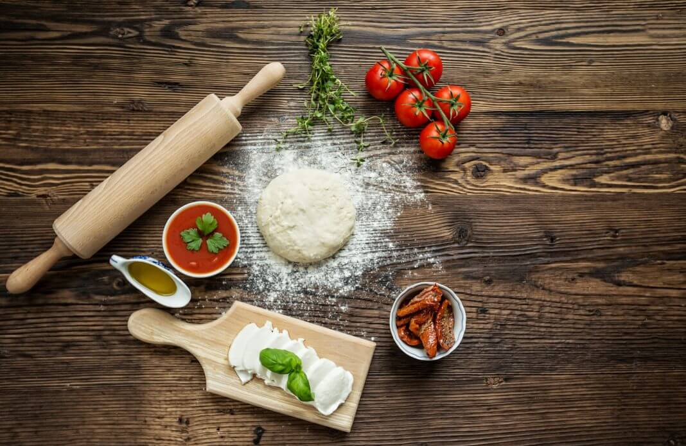
15 de noviembre, 2021 Posted by Carmen
Ciertamente cuando escuchamos hablar de cocina italiana los primeros platos que se nos vienen a la mente es la pasta y la pizza. Sin embargo, existe una gran variedad de cocinas que forman parte de la cotidianidad de este país y que forman parte a su vez de su tradición cultural.
En esta ocasión te contamos acerca de los 10 platos tradicionales de la cocina italiana, en una recopilación apta para todos los gustos y que te dará buenas ideas a la hora de cocinar.
Pasta fresca con il ragú a la bolognese
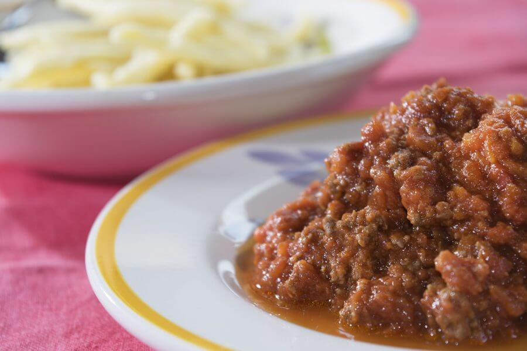
De las mejores cosas que posee la cultura italiana, su cocina es una de ellas, la cocina italiana cautiva por completo a cualquiera y una muestra de ello es esta receta de ragú de carne a la boloñesa. Ésta receta de ragú de carne a la boloñesa es quizá una de las recetas más sencillas, pero sin duda de las que más tiempo requiere. Éste ragú a la boloñesa es la auténtica receta 100% italiana, se prepara a fuego lento y se dejan reducir al tiempo que se concentran los ingredientes, el sabor que queda es intenso, perfecto para acompañar un buen plato de pasta o un pasticho.
Raviolis de carne
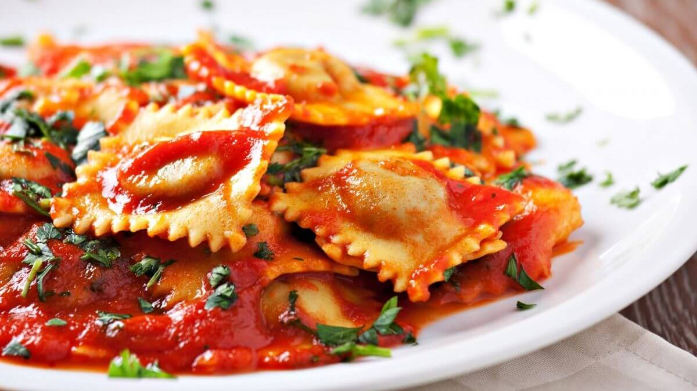
Tan sencillos como sabrosos son estos raviolis de carne bañados con salsa napolitana. La clave de esta receta está en cocinar los tomates sin piel ni semillas, y en hacer la salsa en una olla de barro.
Sopa de tortellini
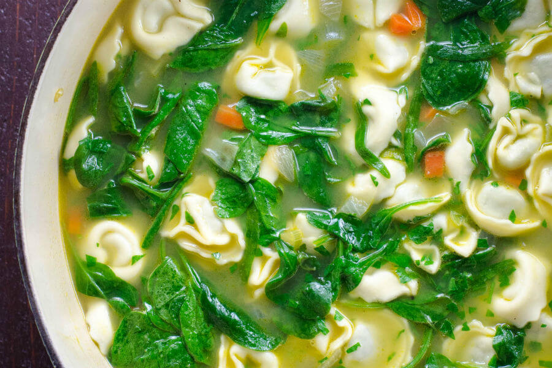
Esta sopa de tortellini con espinacas frescas y queso impresionará a la familia y amigos. Anímese a seguir estas indicaciones para preparar esta receta en la comodidad de su casa. ¡Demasiado sabrosa como para perdérsela!
Lasaña al horno
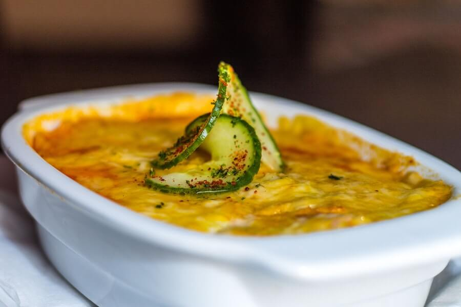
La lasaña es un plato de origen italiano cuyas protagonistas son las láminas de pasta. Es famosa en todo el mundo incluso con diferentes nombres. Aunque la más reconocida es la tradicional con salsa de tomate y carne, también se puede hacer con verduras para obtener una lasaña ligera. Esta también se termina con bechamel y abundante queso rallado para gratinarla en el horno.
Rizotto con azafran
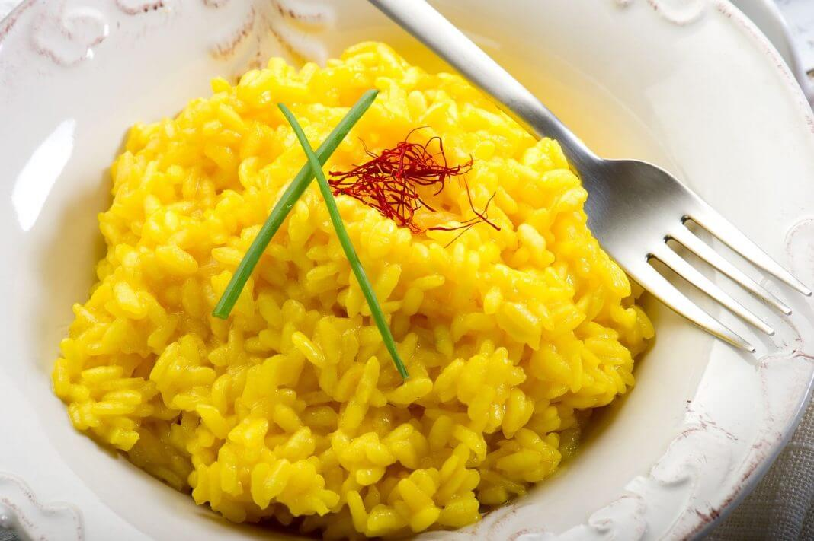
El risotto es una receta de arroz clásica de la comida italiana. La característica especial del risotto con azafrán es el punto cremoso que se obtiene, al poseer mantequilla y queso rallado entre sus ingredientes. Este risotto con azafrán, se denomina en Italia “risotto allo zafferano”. Es bastante similar al “risotto alla Milanese”, un típico de la zona del Norte de Italia.
Pasta y judías
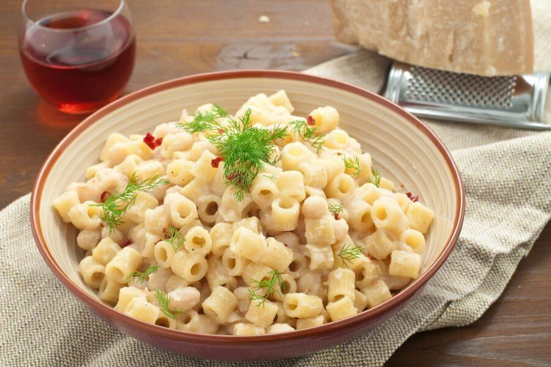
La pasta con judías es un clásico de la cocina italiana, aunque parece ser de origen napolitana: lo que es cierto, es que es una receta con muchas variantes, dependiendo de la zona donde se cocina. Se suele cocinar con pasta mixta (en general, se usaban los restos de confecciones abiertas y se mezclaban). La pasta con judías se consume, principalmente, durante todo el año, y se suele servir a los comensales como primer plato.
Vitello tonnato: Solomillo de ternera al atún
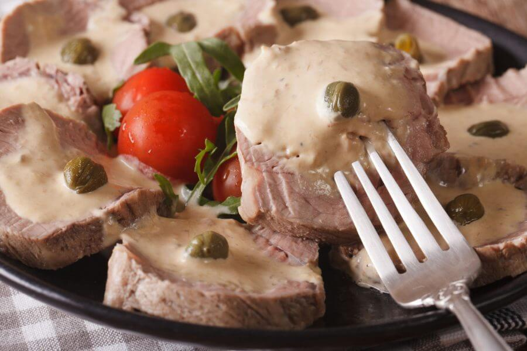
El vitello tonnato es un plato tradicional de la cocina italiana que consiste en solomillo de ternera al atún, un plato que se sirve frío. Este plato italiano de vitello tonnato es ideal para servir como una entrada en una comida de verano super practica y sencilla de preparar.
Berenjenas a la parmesana
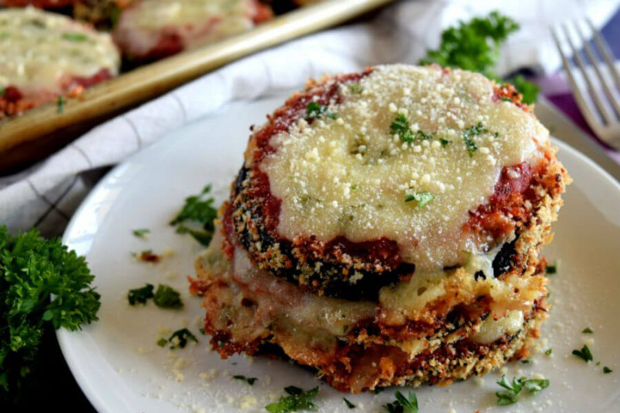
Esta receta de berenjenas a la parmesana, es para disfrutar de una preparación sencilla, pero realmente deliciosa. Si quiere probar una guarnición diferente para acompañar sus platillos favoritos, esta es su oportunidad.
Tartaleta de fresas
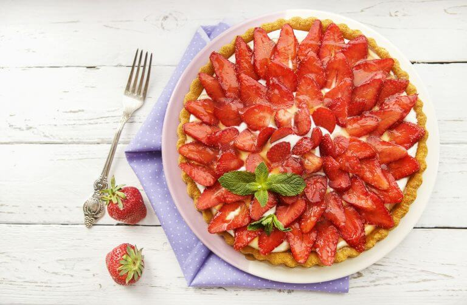
El dulce sabor y la atractiva presencia de una tartaleta de fresas, la convierte en la predilecta de grandes y chicos a la hora de saborear un delicioso postre. Es que la fresa se ha convertido en referencia obligada para el paladar.
Sopa Inglesa, postre italiano
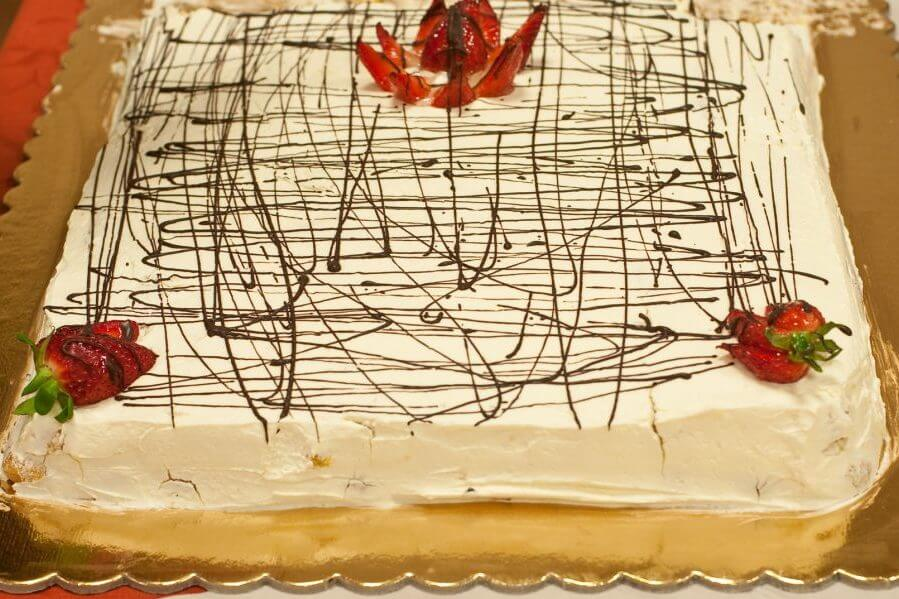
La sopa inglesa es un postre tradicional de la cocina italiana, uno de los postres más deliciosos que podemos encontrar. Aunque la preparación sopa inglesa lleva algo de trabajo, con esta receta resultará fácil de preparar, pero debemos seguir al pie de la letra.
COMENTARIOS
Registrate para recibir toda la información y las ultimas noticias de El gran chef en en tu correo electronico, como asi tambien ofertas y descuentos exclusivos en materiales y cursos por ser parte de esta comunidad ! no te lo pierdas ¡
-

Elena Guanco
Bunas recetas para salir de lo comun con la cocina italiana y darle una vuelta.
Juliana Venegas
17 de febrero del 2021-3:24 pm
Hermosas recetas para hacer en casa disfrutar con la familia.